Data Structures and Algorithms
with Object-Oriented Design Patterns in Java
Data Structures and Algorithms
with Object-Oriented Design Patterns in JavaThe applications of lists and ordered lists are myriad. In this section we will consider only one--the use of an ordered list to represent a polynomial. In general, an 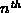-order polynomial in x, for non-negative integer n, has the form
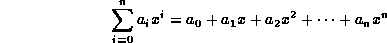
where 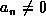.
The term  is the coefficient of the
is the coefficient of the  power of x.
We shall assume that the coefficients are real numbers.
power of x.
We shall assume that the coefficients are real numbers.
An alternative representation for such a polynomial consists of a sequence of ordered pairs:
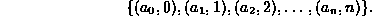
Each ordered pair, 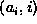,
corresponds to the term 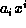 of the polynomial.
That is, the ordered pair is comprised of the coefficient of the  term
together with the subscript of that term, i.
For example, the polynomial 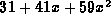
can be represented by the sequence 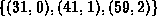.
term
together with the subscript of that term, i.
For example, the polynomial 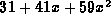
can be represented by the sequence 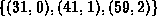.
Consider now the 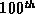-order polynomial 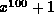. Clearly, there are only two nonzero coefficients: 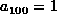 and 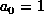. The advantage of using the sequence of ordered pairs to represent such a polynomial is that we can omit from the sequence those pairs that have a zero coefficient. We represent the polynomial by the sequence 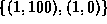
Now that we have a way to represent polynomials, we can consider various operations on them. For example, consider the polynomial
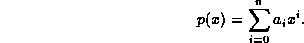
We can compute its derivative with respect to x by differentiating each of the terms to get
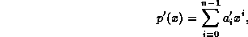
where 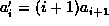. In terms of the corresponding sequences, if p(x) is represented by the sequence
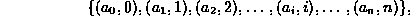
then its derivative is the sequence
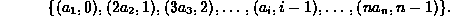
This result suggests a very simple algorithm to differentiate a polynomial which is represented by a sequence of ordered pairs:
Of course, the worst-case running time of the polynomial differentiation
will depend on the way that the sequence of ordered pairs is implemented.
We will now consider an implementation that makes use of
the OrderedListAsLinkedList class.
To begin with, we need a class to represent the terms of the polynomial.
Program  gives the definition of
the Term class and several of its methods.
gives the definition of
the Term class and several of its methods.
Each Term instance has two fields, coefficient and exponent, which correspond to the elements of the ordered pair as discussed above. The former is a double and the latter, an int.
The Term class extends the AbstractObject class
introduced in Program .
Therefore, instances of the Term class may be put into a container.
Program defines three methods:
a constructor, compareTo, and differentiate.
The constructor simply takes a pair of arguments and
initializes the corresponding fields accordingly.
The compareTo method is used to compare two Term instances. Consider two terms , 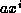 and 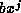. We define the relation 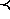 on terms of a polynomial as follows:
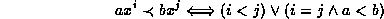
Note that the relation does not depend on the value of the variable x. The compareTo method implements the relation.
Finally, the differentiate method does what its name says: It differentiates a term with respect to x. Given a term such as 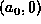, it computes the result (0,0); and given a term such as where i>0, it computes the result 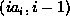.
We now consider the representation of a polynomial.
Program defines the Polynomial interface.
The interface comprises three methods--add, differentiate, and plus.
The add method is used to add terms to a polynomial.
The differentiate method differentiates the polynomial.
Finally, the plus method is used to compute the sum of two polynomials.
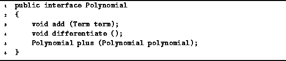
Program: Polynomial interface.
Program
introduces the PolynomialAsOrderedList class.
This concrete class implements the Polynomial interface.
It has a single field of type OrderedList.
In this case, an instance of the OrderedListAsLinkedList class
is used to contain the terms of the polynomial.
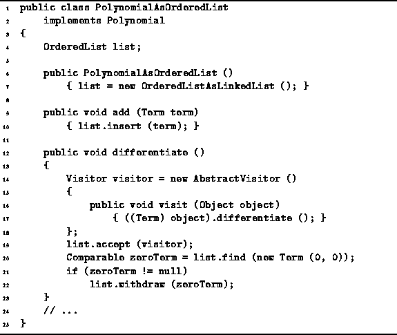
Program: PolynomialAsOrderedList class.
Program defines the method differentiate
which has the effect of changing the polynomial to its
derivative with respect to x.
To compute this derivative,
it is necessary to call the differentiate method
of the Term class for each term in the polynomial.
Since the polynomial is implemented as a container,
there is an accept method which can be used
to perform a given operation on all of the objects in that container.
In this case, we define a visitor, DifferentiatingVisitor,
which assumes its argument is an instance of the Term class
and differentiates it.
After the terms in the polynomial have been differentiated, it is necessary to check for the term (0,0) which arises from differentiating . The find method is used to locate the term, and if one is found the withdraw method is used to remove it.
The analysis of the running time of the polynomial differentiate method is straightforward. The running time required to differentiate a term is clearly O(1). So too is the running time of the visit method of the DifferentiatingVisitor. The latter method is called once for each contained object. In the worst case, given an -order polynomial, there are n+1 terms. Therefore, the time required to differentiate the terms is O(n). Locating the zero term is O(n) in the worst case, and so too is deleting it. Therefore, the total running time required to differentiate a -order polynomial is O(n).
 Copyright © 1998 by Bruno R. Preiss, P.Eng. All rights reserved.
Copyright © 1998 by Bruno R. Preiss, P.Eng. All rights reserved.